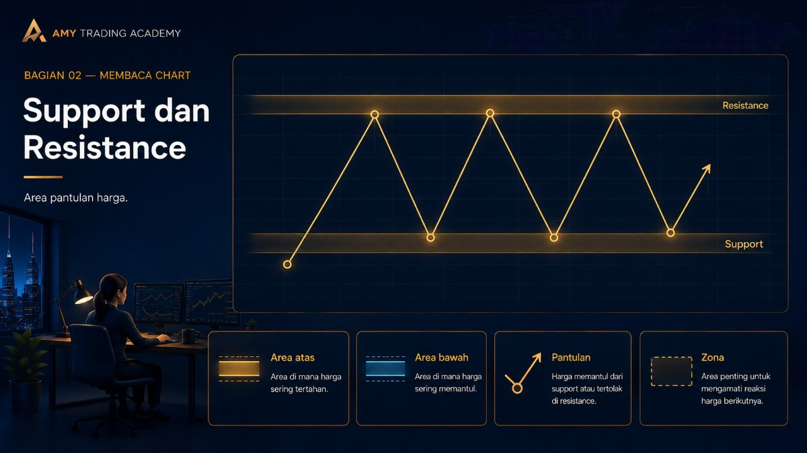
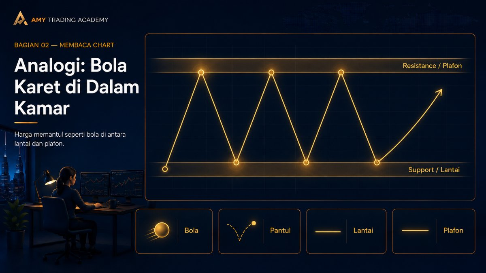
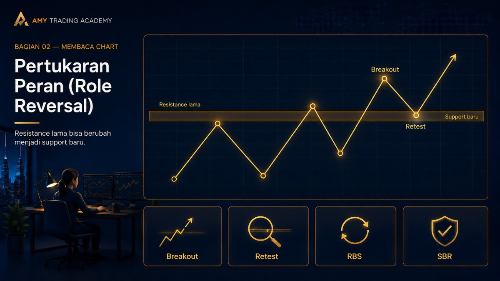
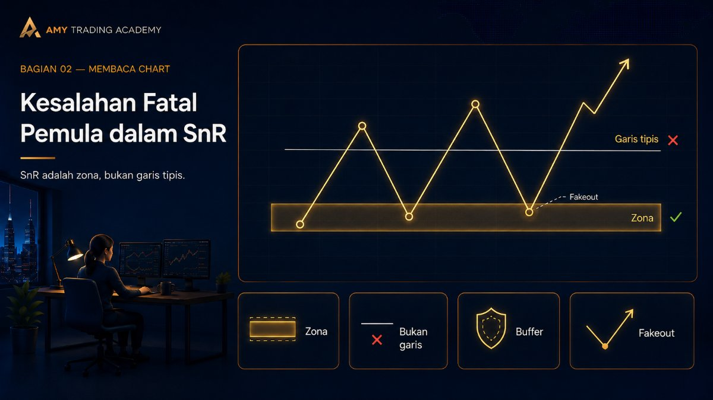

Support dan Resistance

Pernahkah kamu memperhatikan sebuah chart, lalu menyadari bahwa harga sering kali memantul-mantul di angka yang itu-itu saja? Harga turun ke angka X, lalu memantul naik. Bulan depannya turun lagi ke angka X, eh memantul naik lagi seolah-olah ada tembok tak kasat mata di sana. Fenomena inilah yang disebut dengan Support dan Resistance (SnR).
Support dan Resistance adalah salah satu pondasi teknikal paling tua, paling dasar, namun sekaligus paling ampuh di seluruh pasar finansial dunia. Mari kita bayangkan konsep ini dengan analogi sederhana.
Analogi: Bola Karet di Dalam Kamar

Bayangkan kamu memegang sebuah bola karet (ini adalah harga), dan kamu sedang berdiri di dalam sebuah kamar tertutup.
1. Support (Lantai)
Coba lemparkan bola itu ke bawah dengan keras. Saat bola membentur Lantai, ia tidak akan terus menembus ke dalam tanah, bukan? Lantai itu menahan jatuhnya bola dan membuatnya memantul kembali ke atas. Di chart, lantai ini kita sebut sebagai Support. Support adalah area harga di bawah di mana banyak pembeli (Buyer) sedang antri, sehingga saat harga menyentuh area tersebut, harga akan "dibeli" dan didorong naik lagi.
2. Resistance (Plafon/Atap)
Sekarang, lemparkan bola karet tadi kuat-kuat ke atas. Saat bola menabrak Plafon kamarmu, ia akan terhenti dan memantul jatuh kembali ke bawah. Di chart, plafon ini disebut Resistance. Resistance adalah area harga di atas di mana banyak penjual (Seller) sudah bersiap-siap, sehingga saat harga naik menyentuh area tersebut, barang akan ramai-ramai dijual dan harganya kembali turun.
Pertukaran Peran (Role Reversal)

Nah, cerita si bola karet ini tidak berhenti di situ saja. Dalam kondisi pasar yang sedang trending kencang, tembok-tembok ini bisa saja hancur diterjang! Ini yang kita sebut dengan Breakout.
Apa yang terjadi kalau kamu melempar bola karet itu ke atas dengan kekuatan Hulk, sampai plafon (Resistance) kamarmu jebol? Bola itu akan melayang dan masuk ke ruangan kosong di lantai dua.
Sekarang, bola itu berada di lantai dua. Jika bola itu jatuh lagi, ia tidak akan menembus ke kamarmu yang lama, melainkan akan mendarat di plafon kamarmu yang tadi sudah berlubang. Ya, Plafon (Resistance) lama, sekarang telah berubah fungsi menjadi Lantai (Support) baru.
Dalam bahasa trading, fenomena luar biasa ini disebut Resistance Becomes Support (RBS). Hal yang sama juga berlaku sebaliknya saat harga menjebol lantai turun ke bawah (Support Becomes Resistance / SBR).
Kesalahan Fatal Pemula dalam SnR

Mitos Terbesar: Support dan Resistance adalah sebuah Garis Tipis (Line).
Ini adalah alasan kenapa banyak pemula sering rugi. Mereka menarik satu garis lurus yang sangat tipis di harga tepat Rp 10.000 misalnya. Ketika harga turun ke Rp 9.950, mereka panik: "Wah garis Support-ku jebol! Ayo Sell!" Eh, lima menit kemudian harganya ditarik naik lagi gila-gilaan ke atas (Fakeout).
Ingatlah aturan ini: Support dan Resistance adalah sebuah ZONA (Area), bukan sebuah garis tipis!
Ibaratnya, batas lapangan sepak bola itu bukan setipis benang, tapi berupa garis kapur yang cukup tebal. Terkadang kaki pemain menginjak sedikit keluar garis putih, tapi selama bolanya belum benar-benar keluar jauh, permainannya belum out. Karena itu, saat menggambar SnR di chart, gunakanlah Kotak (Rectangle), bukan garis lurus. Berikan ruang gerak sedikit (buffer) untuk harga bernapas.
Setelah mengerti bagaimana harga memantul di Support dan Resistance, dan bagaimana batas ini bisa dijebol untuk membentuk batas baru, kamu sudah memiliki semua puzzle yang dibutuhkan untuk membaca Struktur Pasar secara utuh. Mari kita gabungkan semuanya di bab terakhir dari seri Membaca Chart ini: Market Structure Dasar!